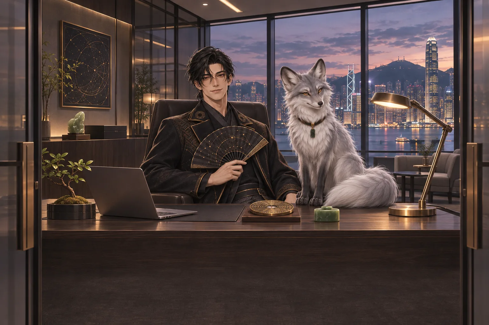

XUAN
玄
走過低谷，所以唔急住教你點行。
佢會問，亦會聽；決定始終留返畀你。
「未有答案，唔代表你冇路揀。」
公開預覽：只用虛構資料。不設登入、不保存；關閉或重新整理會清除本頁填寫。

玄與九爺 / 今晚，留少少時間畀自己
工作、感情，定係你自己？由一件掛心嘅事開始。
出生日期必填 · 問卷預覽不保存 · 3 個完整故事
有啲說話，借個故事先講得出口。
走過低谷，所以唔急住教你點行。
佢會問，亦會聽；決定始終留返畀你。
「未有答案，唔代表你冇路揀。」
眼光利，說話更利。
嘴上寸你兩句，心裏一直企喺你嗰邊。
「諗清楚先行，唔等於你行得慢。」
聽幾句說話，或略過開場填資料。出生年月日必須填寫。
逐題填寫虛構資料、核對後，喺故事裏試揀一次；隨時可以修改，資料不會保存。
完整故事、反思同下一步；唔係個人命盤或預言。
唔會。呢度用原創故事陪你整理選擇，唔會斷言邊件事一定發生，亦唔會代你做決定。
要，出生年月日必須填寫。請只用虛構資料試問卷，其餘問題逐步顯示，可返回核對。公開預覽不設登入、不保存，未提供個人命盤。
唔會。呢度展示嘅故事、結局同反思都可以完整睇完，冇付款步驟。